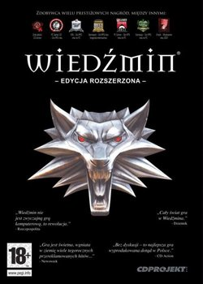
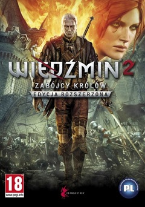
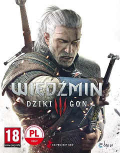
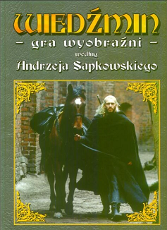
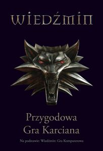
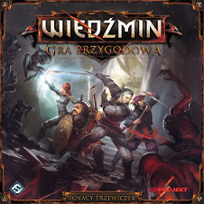
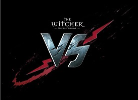
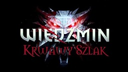

Wiedźmin
| Komputerowa gra fabularna w konwencji fantasy, wyprodukowana przez CD Projekt Red i wydana przez Atari. Jej premiera odbyła się 26 października 2007 roku na platformie Microsoft Windows, natomiast w kwietniu 2012 roku ukazała się jej wersja na komputery z systemem OS X. Akcja gry toczy się w świecie wiedźmina, stworzonym przez Andrzeja Sapkowskiego. Głównym bohaterem gry, w którego wciela się gracz, jest Geralt z Rivii – jeden z wiedźminów, czyli postaci o nadludzkich zdolnościach, zajmujących się zwykle zabijaniem potworów atakujących siedliska ludzi. Po wydarzeniach z Sagi o wiedźminie Geralt, pozbawiony pamięci, próbuje na nowo odnaleźć się w mrocznej rzeczywistości świata gry, pozbawionej wyraźnego podziału na dobro i zło. |  |
Wiedźmin 2: Zabójcy królów
|  | Komputerowa fabularna gra akcji w reżyserii Adama Badowskiego, osadzona w świecie wiedźmina Andrzeja Sapkowskiego i wyprodukowana przez CD Projekt Red we współpracy z Agorą SA. Jej premiera odbyła się 17 maja 2011 roku na platformie Microsoft Windows, natomiast rok później pojawiły się wersje na konsolę Xbox 360 i system operacyjny OS X. Wiedźmin 2 jest kontynuacją gry komputerowej Wiedźmin z 2007 roku. W drugiej części cyklu gracz ponownie wciela się w rolę Geralta z Rivii – wiedźmina, który specjalizuje się w odpłatnym zabijaniu potworów. Narracja gry jest skupiona na wydarzeniach zaistniałych po morderstwie dokonanym na władcy krainy zwanej Temerią, w której toczy się akcja Wiedźmina 2. Geralt musi odszukać innego wiedźmina, który dopuścił się zabójstwa króla, co spowodowało destabilizację królestwa. |
Wiedźmin 3: Dziki Gon
| Fabularna gra akcji wyprodukowana i wydana przez CD Projekt Red 19 maja 2015 na platformy Microsoft Windows, PlayStation 4 i Xbox One. Wersja na Nintendo Switch ukazała się 15 października 2019. Wydanie gry na PlayStation 5 i Xbox Series X/S zaplanowano na 2022 rok. Gra jest kontynuacją wydanego w 2007 roku Wiedźmina oraz Wiedźmina 2: Zabójców królów, który miał swoją premierę w 2011 roku. Tak jak poprzednie części, opowiada ona historię tytułowego wiedźmina – Geralta z Rivii – i jest osadzona w świecie wiedźmina, którego twórcą jest Andrzej Sapkowski. Produkcja jest ostatnią częścią cyklu, którego głównym bohaterem jest tytułowy Wiedźmin, razem z nią stanowiącego trylogię. |  |
Wiedźmin: Gra wyobraźni
|  | W roku 2001 nakładem wydawnictwa Mag ukazała się gra fabularna Wiedźmin: Gra wyobraźni na podstawie książek Sapkowskiego. Gra ta, mimo wielu zarzutów ze strony fanów tego typu zabawy, zdobyła sobie niemałą popularność w Polsce. Postanowiono jednak poprawić błędy pierwotnej wersji systemu rozgrywki, w związku z czym przygotowano drugą wersję gry. |
Wiedźmin: Przygodowa Gra Karciana
| W styczniu 2007 Wydawnictwo Kuźnia Gier zostało wybrane przez CD Projekt Red Studio, do stworzenia dwóch kompletnych gier karcianych towarzyszących produkcji gry komputerowej Wiedźmin. Wiedźmin – gra promocyjna dołączana była do edycji kolekcjonerskiej gry komputerowej, zaś Wiedźmin: Przygodowa Gra Karciana ukazała się w październiku 2007 i jest niezależną grą dla 2 do 4 osób (trafiła do normalnej sprzedaży 8 października 2007). Za przygotowanie obu gier odpowiadało krakowskie wydawnictwo Kuźnia Gier, a ich autorami byli: Magdalena Madej-Reputakowska, Maciej Reputakowski, Michał Stachyra, Maciej Zasowski. |  |
Wiedźmin: Gra Przygodowa
|  | W 2014 wydana została gra planszowa Wiedźmin: Gra Przygodowa zaprojektowana przez Ignacego Trzewiczka. Później wydana została też wersja elektroniczna tej gry. |
The Witcher: Versus
| 9 lipca 2008 roku pojawiła się ostateczna wersja gry internetowej The Witcher: Versus produkcji CD Projekt Red oraz One2tribe. Można się w niej wcielić w wiedźmina, czarodziejkę lub przerazę. Zdobywając kolejne poziomy dostajemy punkty talentu, które przeznaczamy na nowe umiejętności, odblokowujemy możliwość kupna nowych przedmiotów. 31 maja 2012 roku wskutek zakończenia współpracy między CD Projekt Red a one2tribe gra została oficjalnie zamknięta. |  |
Wiedźmin: Krwawy szlak
|  | W 2007 roku studio Breakpoint wydało grę napisaną w języku Java przeznaczoną na telefony komórkowe: Wiedźmin: Krwawy szlak (wydana także w wersji anglojęzycznej jako The Witcher: Crimson Trail). Jest to gra akcji, w której gracz wciela się w wiedźmina Geralta. Używając kombinacji ciosów i wiedźmińskich znaków przedziera się przez kolejne poziomy, zabijając potwory. Gra nie jest bezpośrednio powiązana fabularnie z cyklem wiedźmińskim. Wiadomo tylko tyle, że fabuła w niej przedstawiona osadzona jest zaraz po zakończeniu treningu młodego wiedźmina Geralta. |
{kind=link}
{kind=link}
{kind=link}
{kind=link}
{kind=link}
{kind=link}
{kind=link}
{kind=link}